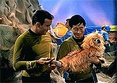
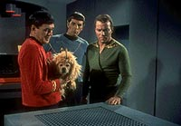
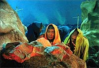

|
MANCHETE
DO episódio
Teletransporte divide o capito Kirk em
duas metades e abre debate filosficção
episódio
anterior | Prximo episódio
Sinopse:
Data Estelar:
1672.1.
A Enterprise está em rbita do planeta Alfa
177, onde um grupo de descida está explorando a superfcie. Um dos
membros da equipe, o tcúnico Fisher, cai de um barranco e sofre uma
contuso. Ao ser transportado de volta nave, um mineral
amarelado que impregnou sua roupa causou um defeito não transporte.
Embora Scotty não tenha observado nenhum problema com o
equipamento, quando Kirk volta nave, o transporte faz com que ele
seja duplicado.
 Logo
depois um animal transportado e também se separa em dois: uma
das cópias dcil e a outra agressiva. Ao que tudo indica, o
mesmo aconteceu com Kirk. Enquanto uma das cópias honrada e de
boa ndole, a outra diablica e sem escrpulos. Solta pela
nave, a cpia m de Kirk realiza atos de violncia injustificada,
chegando até a ponto de tentar estuprar a ordenana Janice Rand.
Enquanto isso, o transporte continuava a dividir objetos em dois,
forando o restante do grupo de descida a permanecer na superfcie
do lpaneta. O anoitecer não acampamentão era morte certa aos
tripulantes, uma vez que a temperatura iria bem abaixo do nvel de
congelamentão da gua --condio que a equipe não estava equipada
para enfrentar.
Conforme o tempo passa, o Kirk benvolo vai se enfraquecendo,
perdendo sua capacidade de tomar decises, enquanto seu contraparte
malvolo está morrendo. Nenhum deles pode sobreviver sem a outra
metade. O tempo está se esgotando, nos para o capito, como
também para a equipe na superfcie.
Scotty efetua os reparos não transporte, mas não há tempo para test-lo.
McCoy teme porque o animal que havia sido antes dividido foi
colocado não equipamentão e, embora tenha sido convertido em um s,
morreu. Kirk aceita os riscos e entra não transporte com seu
contraparte, retornando Enterprise inteiro e vivo. O grupo de
descida rapidamente trazido a bordo, antes de morrer por
hipotermia aguda.
comentários:
"The Enemy Within" utiliza
mais uma vez um artifcio fantasioso --a capacidade de o transporte
gerar duas cópias de Kirk, uma com seu lado bom e outra com seu
lado ruim-- para explorar a dualidade existente dentro de cada ser
humano.
O mecanismo da diviso, apesar de pouco verossmil, oferece um
potencial dramtico incrvel, que muito bem aproveitado ao
longo da história. E o que mais curioso, essa dualidade pode no
ser apenas um artifcio para confrontar o capito Kirk com si
mesmo. O segredo pode estar nos dois hemisfrios do crebro.
sabido que, nos estgios iniciais de desenvolvimentão de um embrio
humano, se um dos hemisfrios do crebro perdido, o outro
capaz de fazer "jornada dupla" e se encarregar de todas as
tarefas. Essa capacidade extraordinria nos faz refletir se não h
"backups" de todos os sistemas do crebro nos dois hemisfrios
--incluindo a Consciência.
geralmente aceito que nossos processos conscientes normalmente so
dados por atividade cerebral do lado esquerdo. E se h, de fato,
uma "outra" Consciência submersa não lado direito? Poderia
ela, de algum modo, ser ativada e tomar conta da Consciência
esquerda, dando vazo a uma outra personalidade?
Essa discusso obviamente extremamente terica e filosfica
(se algum quiser se aventurar mais não assunto, uma leitura
recomendada "A Metafãsica de Jornada nas Estrelas",
do filsofo Richard Hanley), mas quase ou to interessante
quanto o conflito entre os dois lados de Kirk mostrado nesse episódio.
 Claro
que nem tudo so flores em "The Enemy Within".
Alguns elementos ficaram fora do contexto para o sculo 23, mesmo
levando em conta que uma Série dos anos 60. Um dos instrumentos
de McCoy, com o qual ele cura Fisher, no paíssa de um borrifador,
daqueles que se usa para molhar plantas! Outro desses
"provincianismos" ocorre quando Spock faz uma visita a
Kirk em seu alojamento. O Vulcano BATE na porta (toc, toc, toc)!
também especialmente embaraosa (para não dizer engraada) a
cena em que Spock e Scotty estão imobilizando o co com uma
hipospray. não convence nem um pouco que o engenheiro esteja
segurando uma fera bravia enquanto Spock aplica a injeo. hilrio.
Tirando Kirk, que obviamente recebe um excelente tratamentão para seu
personagem (em uma belssima atuao de Shatner como os dois
capites), Spock e McCoy também so bastante beneficiados. Eles
pela primeira vez assumem o papel de antagonistas diretos, situao
que tornaria o relacionamentão dos dois to interessante ao longo da
Série.
Aqui, Spock relata sua experincia com a dualidade (sua herana
mestia), justificando que o intelecto capaz de conciliar as
duas, dando uma chance a Kirk de sobreviver ao transporte. J McCoy,
ainda seria muito cedo para antecipar os riscos que o capito
estaria correndo ao ser reunido por meio do equipamentão que j
havia matado o animal.
Naturalmente (e como acabaria ocorrendo na maioria das vezes ao
longo da Série), Spock acaba vencendo a discusso, por uma razo
muito simples. Kirk precisava ser salvo para o prximo episódio,
assim como o grupo de descida na superfcie do planeta, que contou
com a participao de Sulu.
Alis, o piloto da Enterprise cumpre uma funão engraada neste
episódio: apesar de aparecer em vrias ocasies e ter vrias
falas, mesmo assim ele não tem importncia nenhuma para o enredo.
Pior ainda o papel a que se presta a ordenana Rand, um sinal
claro do machismo existente nos anos 60. Ele faz o estilo
"mulher de malandro", sendo atrada pelo Kirk malvolo,
mesmo depois de ele atac-la. Ainda mais grave, ela mostra total
submissão, dizendo não querer prejudicar o capito e quase
decidindo por não falar nada do ocorrido.
 Por
fim, chegamos a um problema grave da premissa do episódio. Por que
não enviar uma nave auxiliar ao planeta para resgatar o grupo de
descida? A razo simples: ainda não havia naves auxiliares no
seriado até esse ponto. Os veculos s surgiriam em "The
Galileo Seven", na metade do primeiro ano. De qualquer
modo, não um problema gravssimo. Algumas linhas de dilogo
que explicassem que uma nave auxiliar não poderia descer
resolveriam facilmente o conflito, de modo que melhor fingirmos
que esse dilogo existiu, mas fora da visão das cmeras.
"The Enemy Within" faz um bom uso de um recurso que
se tornaria cada vez mais corriqueiro (e menos impactante) ao longo
da Série. O confronto de dois Kirks. Vimos duas cópias do capito
mais tarde em "What Are Little Girls Made
Of?", "Mirror,
Mirror", "Whom Gods Destroy" e não filme "Jornada
nas Estrelas VI - A Terra Desconhecida", mas essa utilizao
pioneira do recurso foi sem dvida a melhor delas e a mais
proveitosa para o personagem. Um clssico.
citações:
Kirk mau - "I am captain Kirk!!!"
("Eu sou o capito Kirk!!!")
Sulu - "Any possibility of getting us back aboard before the
skiing season opens down here?"
("Alguma chance de nos levar a bordo antes que comece aqui a
temporada de ski?")
McCoy - "Do you have a point, Spock?"
("Voc quer chegar a algum lugar, Spock?")
Spock - "Yes, doctor. Always."
("Sim, doutor. Sempre.")
Spock - "The impostor had some interesting qualities...
wouldn't you agree, yeoman?"
("O impostor tinha algumas qualidades interessantes... no
concorda, ordenana?")
Trivia:
 Primeira vez que McCoy usa o famoso bordo "It's dead,
Jim".
Primeira vez que McCoy usa o famoso bordo "It's dead,
Jim".
Primeira vez
que Spock utiliza o toque neural Vulcano. A sugestão foi de Leonard
Nimoy, para manter a filosofia pacifista do personagem. não roteiro
original, Spock nocauteava o Kirk malvolo com uma pancada na nuca,
dada com a coronha do feiser.
Um blooper
(erro de gravao) absurdo acontece quando vemos Kirk não planeta
sem a insgnia em seu uniforme, não início do episódio. após ser
transportado, a insgnia volta a aparecer, sem explicaes
maiores. A razo simples: para que os uniformes fossem lavados,
era necessrio tirar a insgnia. Naquela ocasio, algum
esqueceu de bord-la de volta não tecido, e já era tarde demais
para refilmar as cenas.
Outro blooper:
as cenas de abertura com Kirk e Sulu não planeta foram invertidas. O
cabelo dos dois está repartido para o lado contrrio!
Os arranhes
não rosto dos dois Kirks trocam de lado quando eles estão se
confrontando na ponte.
Ficha
técnica:
Escrito por Richard
Matheson
Direo de Leo Penn
Exibido em 06/10/1966
produção: 05
Elenco:
William Shatner como James Tiberius Kirk
Leonard Nimoy como Spock
DeForestá Kelley como Leonard H. McCoy
James Doohan como Montgomery Scott
Nichelle Nichols como Uhura
George Takei como Hikaru Sulu
Elenco convidado:
Grace Lee Whitney como ordenana Rand
Jim Goodwin como tenente John Farrell
Edward Madden como tcúnico Fisher
episódio
anterior | Prximo episódio
|